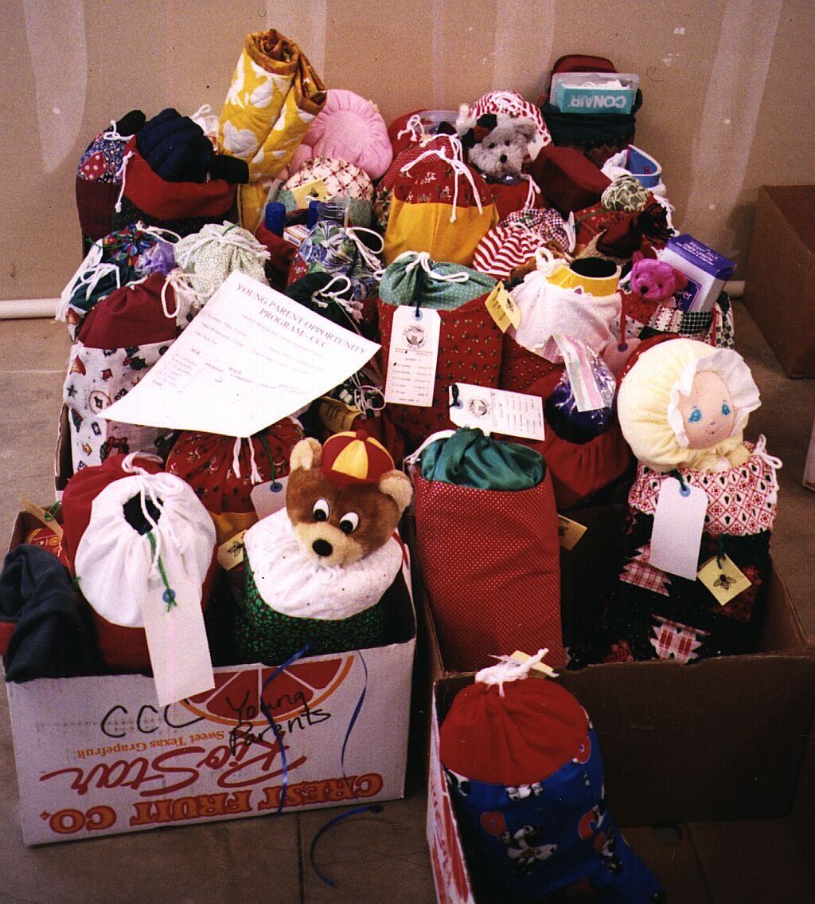

Canby Public Library
220 NE 2nd Ave, Canby
A 501(c)(3) nonprofit · Oregon City, Oregon
Volunteers working with the community brighten the holiday season with personal necessities and age-appropriate gifts for people across Clackamas County.

How the program works
Volunteers sew stockings throughout the year. Starting in October, stockings are available for the public to pick up, fill and return. Each stocking is checked for basic items such as toothpaste, shampoo, deodorant, hats, socks and gloves before distribution to agencies.
Filled stockings should be returned by December 1st. One hundred percent of items and funds are used to fill stockings.
Learn more about us →October–November
Filled stockings can be dropped off at any of these locations. Please return as soon as possible for use this year, and no later than December 1st.
220 NE 2nd Ave, Canby
900 Main Street, Oregon City
250 Princeton Ave, Gladstone
Year-round item drop site225 NE 2nd Ave, Canby
270 Warner Milne Rd, Oregon City
358 Warner Milne Rd G117, Oregon City
Year-round item drop site502 7th Street, Oregon City
525 Portland Ave, Gladstone
107750 SE 42nd Ave, Milwaukie
Year-round item drop site190 NW 2nd Ave, Canby
17884 SE McLoughlin Blvd, Ptld (Jennings Lodge)
16000 SE Misty, Happy Valley
13793 SE Sieben Park Way, Happy Valley
505 G Street, Lake Oswego
Year-round item drop site380 A Ave, Lake Oswego
5440 SE Kellogg Creek Dr, Milwaukie
7300 SE Harmony Rd, Milwaukie
3783 SE Concord Rd, Oak Grove
504 Main Street, Oregon City
Year-round item drop site13175 SE Sunnyside Rd, Happy Valley
10600 SE McLoughlin Blvd, Ptld (Milwaukie)
Year-round item drop site1833 Willamette Falls Drive, West Linn
Year-round item drop siteSupport the work
Monetary donations help purchase basic items and small gifts for stockings.